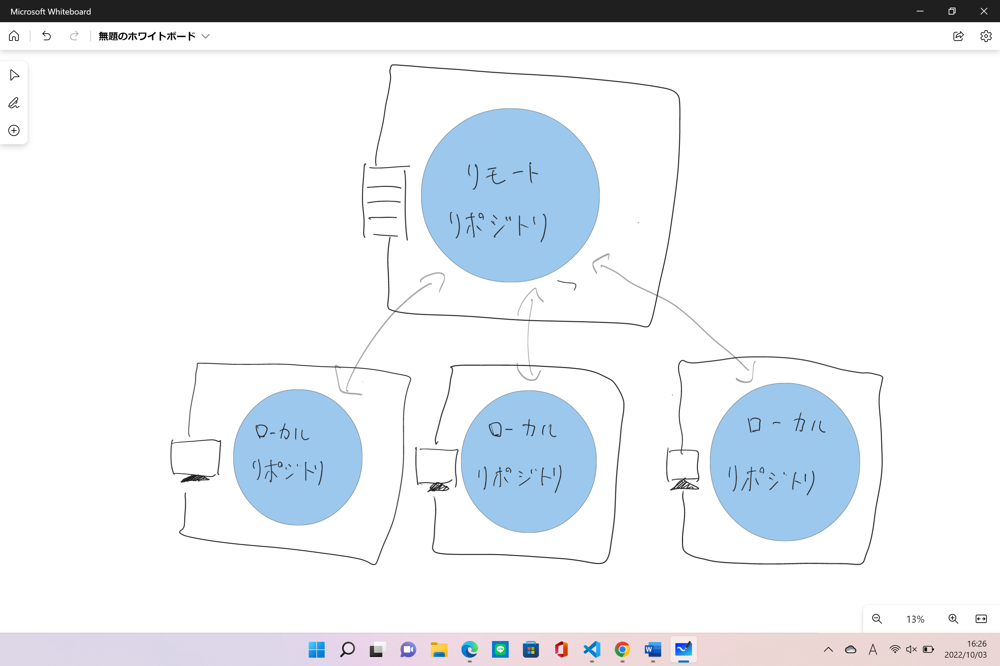

プログラムのソースコードなどの変更履歴を記録追跡するための分散型バージョン管理システムである。
Linuxカーネルのソースコード管理に用いるためにリーナス・トーバルズによって開発され、
それ以降ほかの多くのプロジェクトで採用されている。
gitでは、各ユーザのワーキングディレクトリに、全履歴を含んだリポジトリの完全な複製が作られる。
したがって、ネットワークにアクセスできないなどの理由で中心リポジトリにアクセスできない環境でも、
履歴の調査や変更の記録といったほとんどの作業を行うことができる。
これが「分散型」と呼ばれる理由である。

Htmlに関して
HTMLとはHyperTextMarkupLanguageの略でハイパーテキストを
マークアップ（文章構造や視覚表現などの情報を、目印を用いて意味づけを行うこと）すること
ハイパーテキストとは、ハイパーリンクを埋め込むことの出来る高性能なテキストである。
ハイパーテキストでは、ウェブページから別のウェブページにリンクを張ることが出来たりウェブページ内に画像などのデータファイルを埋め込むことが出来る。
マークアップとは
マークアップというのは文書の各部分が、どのような役割を持っているのかを示すものであり、
見出しなど文書内でどのような役割を持っているかが分かるように目印をつけるものである。
HTMLタグ
>
囲い初めの[＜title＞]を開始タグといい囲い終わりの[＜/title＞]を終了タグという。
このようにすることでタイトルつけることが出来る。
他にも見出しを作りたい場合は
をつけることで作成できます。
＜＞と＜＞の間にある部分をコンテンツと言い、コンテンツを編集して文章の作成を行います。
gitとは
HTMLとは
タグ一覧